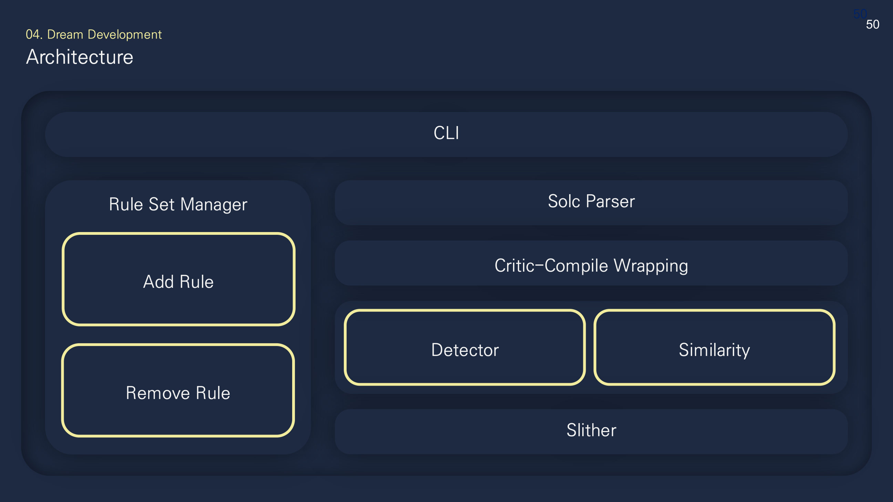
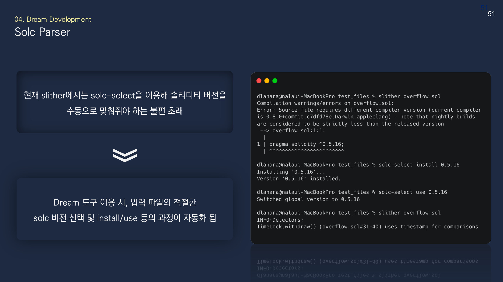
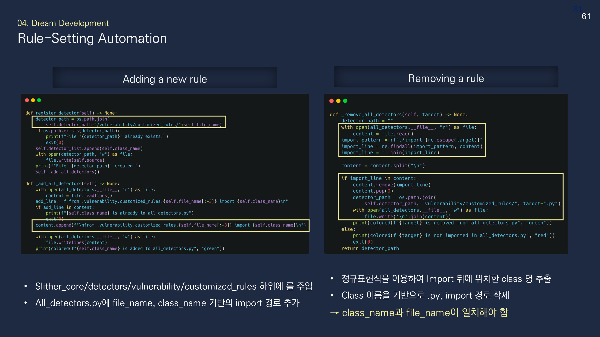
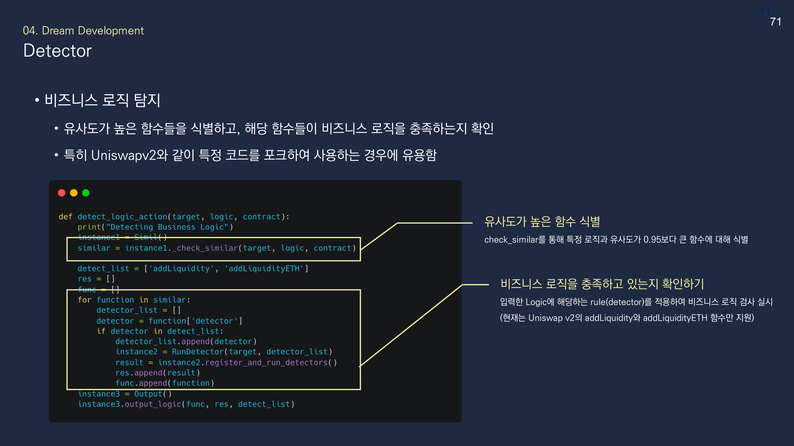
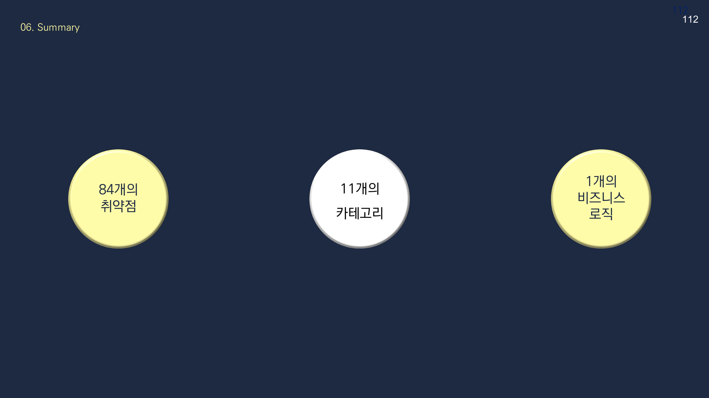
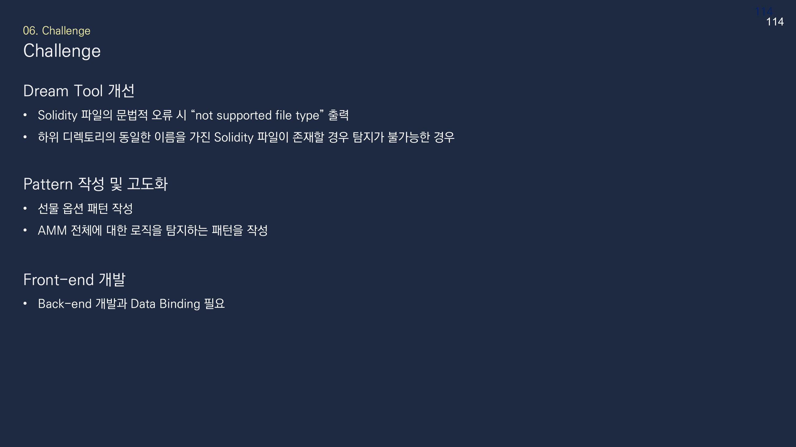

해결해야 한 문제
외부 스마트 컨트랙트는 Solidity 버전과 프로젝트 구조가 달라 같은 분석 도구로도 실행 조건이 달라졌습니다. 기존 정적 분석기는 알려진 취약 패턴에는 강했지만 프로토콜마다 다른 자금·권한 로직이 의도대로 구현됐는지는 확인하기 어려웠습니다.
Tool / Static Analysis
버전과 분석 환경이 다른 외부 컨트랙트를 같은 절차로 검토하는 Python CLI입니다.
외부 스마트 컨트랙트는 Solidity 버전과 프로젝트 구조가 달라 같은 분석 도구로도 실행 조건이 달라졌습니다. 기존 정적 분석기는 알려진 취약 패턴에는 강했지만 프로토콜마다 다른 자금·권한 로직이 의도대로 구현됐는지는 확인하기 어려웠습니다.
수동 보안 검토는 시간과 전문가 경험에 따라 품질 편차가 생기고, 자동 도구도 설치와 규칙 주입에 별도 학습이 필요했습니다. 반복 가능한 1차 검토 절차와 업무 로직을 점검할 실험 경로가 필요했습니다.
파일, 디렉터리, ZIP 입력을 같은 CLI로 컴파일하고, 탐지 규칙·코드 유사도·업무 로직 점검을 선택적으로 실행하는 분석 도구를 만들기로 했습니다.
Slither, Mythril, Securify, Solhint를 탐지 방식, 사용자 정의 규칙, 유지보수성과 실행 환경 기준으로 비교했습니다. 기호 실행, Datalog, AST 패턴과 SlithIR 기반 정적 분석의 장단점을 검토했습니다.
AST, CFG, SlithIR과 Python API를 제공하고 확장 규칙을 만들 수 있는 Slither를 기반으로 선택했습니다. 컴파일 환경은 SolcParser로 자동화하고, 함수 유사도로 후보를 찾은 뒤 별도 규칙으로 업무 로직을 확인하는 2단계 구조를 적용했습니다.
dream CLI에 버전 확인, ruleset 추가·삭제, 취약점·로직·전체 탐지, 유사도 학습·검사 명령을 구성했습니다. pragma의 <, >, ^, ~, = 조건을 해석해 컴파일러 설치와 전환을 자동화하고, 단일 파일·디렉터리·ZIP 입력을 처리했습니다.
규칙 기반 탐지는 전체·분류·개별 detector를 선택할 수 있게 했습니다. 업무 로직 실험은 Uniswap V2의 addLiquidity와 addLiquidityETH 유사 함수를 찾고, 최적 수량 계산과 자산 전송 단계가 유지되는지 확인했습니다.
문법 오류가 파일 형식 오류로 표시되거나 하위 디렉터리의 같은 이름 파일을 구분하지 못하는 문제가 있었습니다. 파생 프로토콜마다 로직이 달라 AMM과 선물 로직을 하나의 규칙으로 일반화하기도 어려웠습니다.
컴파일과 분석 단계를 감싼 공통 입력 경로를 만들고, 규칙 파일과 import 경로의 추가·삭제를 자동화했습니다. 업무 로직은 전 범위를 단정하지 않고 유사 함수 후보를 먼저 좁힌 뒤 확인 가능한 두 함수로 범위를 제한했습니다.
11개 분류의 84개 Slither 규칙을 선택 실행할 수 있게 했고, 7개 사용자 정의 탐지 패턴과 1개 Uniswap V2 유동성 공급 로직을 구현했습니다. 기능 데모는 완료했지만 전체 정확도나 운영 환경 성능으로 일반화할 평가는 수행하지 않았습니다.
반복 가능한 CLI와 핵심 분석 기능은 구현했습니다. 프런트엔드 연동, 파생 프로토콜 전반의 업무 로직 일반화, 경계 입력 처리는 완료 범위 밖으로 남았습니다.
Static Analysis Development 담당으로 Slither의 컴파일·중간표현·탐지 흐름을 분석하고, SolcParser와 규칙 관리·detector 실행·업무 로직 점검 경로를 구현했습니다.
이름과 구조가 유사하다고 경제적 기능까지 같지는 않습니다. 코드 후보를 빠르게 좁히는 기술과 실제 자금 이동·상태 변화가 의도와 맞는지 확인하는 기술은 분리해야 한다는 점을 확인했습니다.
유사도 임계값 0.95와 정적 규칙은 알려진 코드 계열을 찾는 데 유용하지만, 프록시·외부 호출·오라클·거래 순서가 만드는 위험을 완전히 판단하지 못합니다.
컴파일 오류 분류와 경로 충돌을 보완하고, 코드 분석 결과를 온체인 호출과 자금 흐름 증거에 연결해야 합니다. 이 한계가 이후 코드 유사성 연구와 DeFiSense의 거래 의미 복원으로 이어졌습니다.
협력사나 오픈소스 컨트랙트를 도입할 때 서로 다른 버전을 같은 기준으로 1차 선별하고, 권한·자금 함수와 원본 대비 변경 지점을 검토하는 용도로 연결할 수 있습니다. 규칙 통과를 승인으로 간주하지 않고 추가 검토가 필요한 계약을 좁히는 통제 단계입니다.





